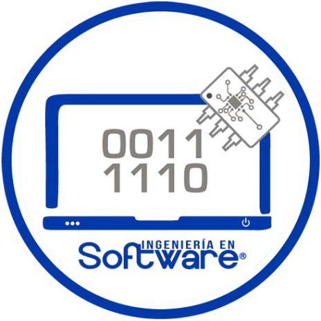

Universidad Politécnica de Tecámac
Ingeniería en Software
Seguridad de la Información

Profesor: Néstor Apolo López González
Alumno:
Salazar De León Andrick
3924IS
Ingeniería en Software
Seguridad de la Información
Profesor: Néstor Apolo López González
Alumno:
Salazar De León Andrick
3924IS
Este se refiere a los acuerdos y las leyes aprobadas qué regulan el uso de la información que se encuentra en la internet, dispositivos electrónicos y cualquiera de los medios digitales junto con los delitos que se cometen por el uso indebido de estos, además....
En México, el derecho a la protección de datos está regulado por diversas normas dependiendo del área de que se trate. En cuanto a el sector privado, tenemos la Ley Federal de Protección de Datos Personales de los Particulares, mientras que en el sector existe la Ley...
El aviso de privacidad es un documento mas que fundamental el cual informa a los titulares de datos personales sobre cómo se recopilará, usará, almacenará y protegerá su información. Los elementos clave de un aviso de privacidad suelen incluir:
Identidad del responsable: Información sobre la entid...
Muchos autores también se han interesado por saber qué es la ética informática. Entre algunos tenemos:
Mario González Arencibia, quien la define como una disciplina analiza los problemas éticos que genera la
tecnología informática. Para Terrel Bynum, quien afirma que la ética informática es una disciplina que
identifica y analiza el impacto de las tecnologías en los valores...
En forma general segun el poder judicial, las principales características que revisten los Delitos informáticos son:
Criminógenas de cuello blanco.